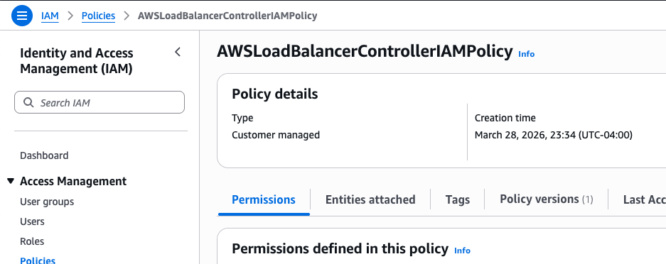
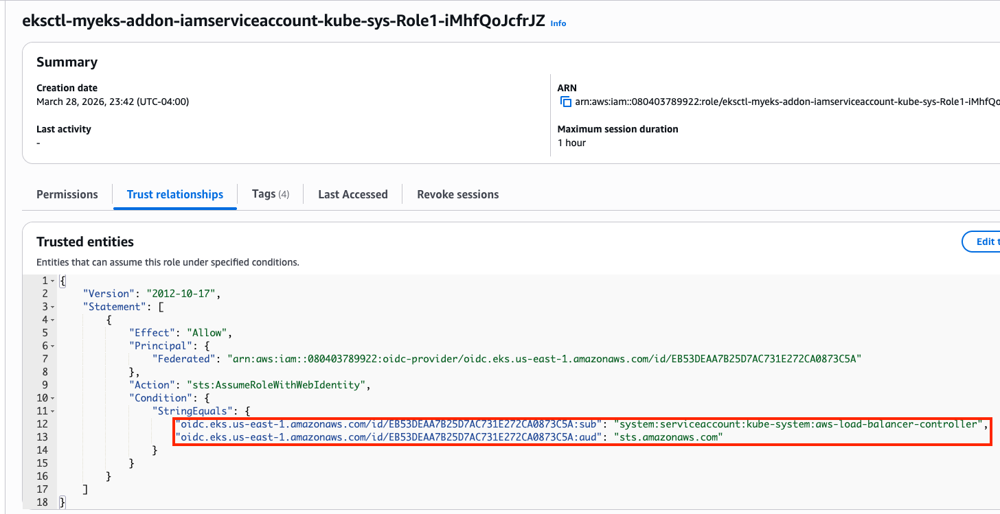
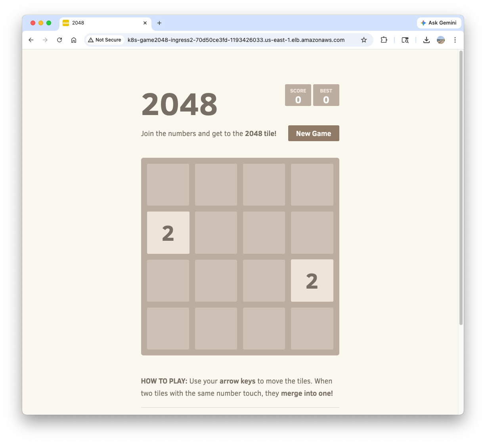

Lab 3: AWS LBC, Ingress, and Gateway API
Warning
This lab is the continuation of 03 EKS Networking Lab: Routing and Interfaces and 04 EKS Networking Lab: Scaling Pod IPs with VPC CNI. You need to provision an EKS cluster by following the instruction described here.
1. Provision AWS Load Balancer Controller
1.1. OIDC Provider Setting
Before provisioning the AWS Load Balancer Controller (LBC), you must set up an IAM OIDC provider for your cluster. This enables IAM Roles for Service Accounts (IRSA), which allows the LBC (running as a Pod) to securely authenticate with AWS APIs to manage load balancers (ALB/NLB) using a specific IAM role, rather than relying on broad permissions attached to the worker nodes.
Check if an OIDC provider already exists for your cluster:
aws iam list-open-id-connect-providers | grep $(aws eks describe-cluster --name myeks --query "cluster.identity.oidc.issuer" --output text | cut -d '/' -f 5)
"Arn": "arn:aws:iam::080403789922:oidc-provider/oidc.eks.us-east-1.amazonaws.com/id/EB53DEAA7B25D7AC731E272CA0873C5A"
If it doesn't exist, create it:
Search a public subnet to deploy ALB. kubernetes.io/role/elb=1 tag is already given to a public subnet.
{kind=link}
1.2. IAM Policy Setting
Download IAM Policy json file:
curl -o aws_lb_controller_policy.json https://raw.githubusercontent.com/kubernetes-sigs/aws-load-balancer-controller/refs/heads/main/docs/install/iam_policy.json
cat aws_lb_controller_policy.json | jq
Create an IAM policy using the downloaded policy:
aws iam create-policy \
--policy-name AWSLoadBalancerControllerIAMPolicy \
--policy-document file://aws_lb_controller_policy.json
{kind=link}

1.3. IRSA Setting
Confirm IRSA is not configured yet:
CLUSTER_NAME=myeks
eksctl get iamserviceaccount --cluster $CLUSTER_NAME
No iamserviceaccounts found
kubectl get serviceaccounts -n kube-system aws-load-balancer-controller
Error from server (NotFound): serviceaccounts "aws-load-balancer-controller" not found
Create two resources with the following command:
- aws-load-balancer-controller
ServiceAccountin kube-system namespace - IAM role for aws-load-balancer-controller
ServiceAccount. This is an AWS IAM resource.
ACCOUNT_ID=$(aws sts get-caller-identity --query "Account" --output text)
eksctl create iamserviceaccount \
--cluster=$CLUSTER_NAME \
--namespace=kube-system \
--name=aws-load-balancer-controller \
--attach-policy-arn=arn:aws:iam::$ACCOUNT_ID:policy/AWSLoadBalancerControllerIAMPolicy \
--override-existing-serviceaccounts \
--approve
Confirm the aws-load-balancer-controller ServiceAccount is created:
eksctl get iamserviceaccount --cluster $CLUSTER_NAME
NAMESPACE NAME ROLE ARN
kube-system aws-load-balancer-controller arn:aws:iam::080403789922:role/eksctl-myeks-addon-iamserviceaccount-kube-sys-Role1-iMhfQoJcfrJZ
kubectl get serviceaccounts -n kube-system aws-load-balancer-controller -o yaml
apiVersion: v1
kind: ServiceAccount
metadata:
annotations:
eks.amazonaws.com/role-arn: arn:aws:iam::080403789922:role/eksctl-myeks-addon-iamserviceaccount-kube-sys-Role1-iMhfQoJcfrJZ
Confirm the above IAM role is created:

{kind=link}
1.4. Install AWS Load Balancer Controller
Add helm chart repo:
Install AWS LBC using helm chart:
# https://artifacthub.io/packages/helm/aws/aws-load-balancer-controller
# https://github.com/aws/eks-charts/blob/master/stable/aws-load-balancer-controller/values.yaml
helm install aws-load-balancer-controller eks/aws-load-balancer-controller -n kube-system --version 3.1.0 \
--set clusterName=$CLUSTER_NAME \
--set serviceAccount.name=aws-load-balancer-controller \
--set serviceAccount.create=false
NAME: aws-load-balancer-controller
LAST DEPLOYED: Sat Mar 28 23:57:55 2026
NAMESPACE: kube-system
STATUS: deployed
REVISION: 1
DESCRIPTION: Install complete
TEST SUITE: None
NOTES:
AWS Load Balancer controller installed!
Confirm:
helm list -n kube-system
NAME NAMESPACE REVISION UPDATED STATUS CHART APP VERSION
aws-load-balancer-controller kube-system 1 2026-03-28 23:57:55.894328 -0400 EDT deployed aws-load-balancer-controller-3.1.0 v3.1.0
...
Confirm pods are crashed:
kubectl get pod -n kube-system -l app.kubernetes.io/name=aws-load-balancer-controller
NAME READY STATUS RESTARTS AGE
aws-load-balancer-controller-7875649799-bq2vs 0/1 CrashLoopBackOff 2 (21s ago) 61s
aws-load-balancer-controller-7875649799-zvbns 0/1 CrashLoopBackOff 2 (23s ago) 61s
Check logs to understand why pods are crashed:
kubectl logs -n kube-system deployment/aws-load-balancer-controller
Found 2 pods, using pod/aws-load-balancer-controller-7875649799-bq2vs
{"level":"info","ts":"2026-03-29T03:59:59Z","msg":"version","GitVersion":"v3.1.0","GitCommit":"250024dbcc7a428cfd401c949e04de23c167d46e","BuildDate":"2026-02-24T18:21:40+0000"}
{"level":"error","ts":"2026-03-29T04:00:04Z","logger":"setup","msg":"unable to initialize AWS cloud","error":"failed to get VPC ID: failed to fetch VPC ID from instance metadata: error in fetching vpc id through ec2 metadata: get mac metadata: operation error ec2imds: GetMetadata, canceled, context deadline exceeded"}
Keyword is error in fetching vpc id through ec2 metadata. To allow AWS LBC to acquire VPC ID, there are two options.
First, configure params for helm install
-set region=region-code-set vpcId=vpc-xxxxxxxx
# get vpc id
terraform state show 'module.vpc.aws_vpc.this[0]'
terraform show -json | jq -r '.values.root_module.child_modules[] | select(.address == "module.vpc") | .resources[] | select(.address == "module.vpc.aws_vpc.this[0]") | .values.id'
vpc-010235c6a899415ba
# Don't run it. We will use the second option.
helm install aws-load-balancer-controller eks/aws-load-balancer-controller -n kube-system --version 3.1.0 \
--set clusterName=myeks \
--set serviceAccount.name=aws-load-balancer-controller \
--set serviceAccount.create=false \
--set region=us-east-1 \
--set vpcId=vpc-vpc-010235c6a899415ba
Second, modify instance metadata options. EC2 > Instances > Choose each instance > Actions > Instance settings > Modify instance metadata options > HTTP PUT response hop limit -> 2 Make sure the hop limit is changed for every instances.
Restart aws-load-balancer-controller and check pod status again:
kubectl rollout restart -n kube-system deploy aws-load-balancer-controller
kubectl get pod -n kube-system -l app.kubernetes.io/name=aws-load-balancer-controller
NAME READY STATUS RESTARTS AGE
aws-load-balancer-controller-8486bfd96-6crzr 1/1 Running 0 33s
aws-load-balancer-controller-8486bfd96-kf8lq 1/1 Running 0 17s
Check deployed CRDs:
kubectl get crd | grep -E 'elb|gateway'
albtargetcontrolconfigs.elbv2.k8s.aws 2026-03-29T03:57:55Z
ingressclassparams.elbv2.k8s.aws 2026-03-29T03:57:55Z
listenerruleconfigurations.gateway.k8s.aws 2026-03-29T03:57:55Z
loadbalancerconfigurations.gateway.k8s.aws 2026-03-29T03:57:55Z
targetgroupbindings.elbv2.k8s.aws 2026-03-29T03:57:55Z
targetgroupconfigurations.gateway.k8s.aws 2026-03-29T03:57:55Z
kubectl explain ingressclassparams.elbv2.k8s.aws
kubectl explain ingressclassparams.elbv2.k8s.aws.spec
kubectl explain ingressclassparams.elbv2.k8s.aws.spec.listeners
GROUP: elbv2.k8s.aws
KIND: IngressClassParams
VERSION: v1beta1
FIELD: listeners <[]Object>
DESCRIPTION:
Listeners define a list of listeners with their protocol, port and
attributes.
FIELDS:
listenerAttributes <[]Object>
The attributes of the listener
port <integer>
The port of the listener
protocol <string>
The protocol of the listener
kubectl explain targetgroupbindings.elbv2.k8s.aws.spec
kubectl explain albtargetcontrolconfigs.elbv2.k8s.aws.spec
Check AWS LBC:
kubectl get deployment -n kube-system aws-load-balancer-controller
kubectl describe deploy -n kube-system aws-load-balancer-controller
kubectl describe deploy -n kube-system aws-load-balancer-controller | grep 'Service Account'
Service Account: aws-load-balancer-controller
Check ClusterRole:
kubectl describe clusterrolebindings.rbac.authorization.k8s.io aws-load-balancer-controller-rolebinding
kubectl describe clusterroles.rbac.authorization.k8s.io aws-load-balancer-controller-role
...
Resources Non-Resource URLs Resource Names Verbs
--------- ----------------- -------------- -----
targetgroupbindings.elbv2.k8s.aws [] [] [create delete get list patch update watch]
...
ingresses [] [] [get list patch update watch]
services [] [] [get list patch update watch]
...
ingresses.elbv2.k8s.aws/status [] [] [update patch]
pods.elbv2.k8s.aws/status [] [] [update patch]
services.elbv2.k8s.aws/status [] [] [update patch]
targetgroupbindings.elbv2.k8s.aws/status [] [] [update patch]
...
...
...
2. Deploy LoadBalancer Service and test app
Set up monitoring first:
Deploy Deployment and Service with the NLB IP type:
cat << EOF > echo-service-nlb.yaml
apiVersion: apps/v1
kind: Deployment
metadata:
name: deploy-echo
spec:
replicas: 2
selector:
matchLabels:
app: deploy-websrv
template:
metadata:
labels:
app: deploy-websrv
spec:
terminationGracePeriodSeconds: 0
containers:
- name: aews-websrv
image: k8s.gcr.io/echoserver:1.10 # open https://registry.k8s.io/v2/echoserver/tags/list
ports:
- containerPort: 8080
---
apiVersion: v1
kind: Service
metadata:
name: svc-nlb-ip-type
annotations:
service.beta.kubernetes.io/aws-load-balancer-nlb-target-type: ip
service.beta.kubernetes.io/aws-load-balancer-scheme: internet-facing
service.beta.kubernetes.io/aws-load-balancer-healthcheck-port: "8080"
service.beta.kubernetes.io/aws-load-balancer-cross-zone-load-balancing-enabled: "true"
spec:
allocateLoadBalancerNodePorts: false # K8s 1.24+ 무의미한 NodePort 할당 차단
ports:
- port: 80
targetPort: 8080
protocol: TCP
type: LoadBalancer
selector:
app: deploy-websrv
EOF
kubectl apply -f echo-service-nlb.yaml
Check the DNS record:
kubectl get svc svc-nlb-ip-type
NAME TYPE CLUSTER-IP EXTERNAL-IP PORT(S) AGE
svc-nlb-ip-type LoadBalancer 10.100.251.170 k8s-default-svcnlbip-9aa6a0b40c-52a2a126c4232b67.elb.us-east-1.amazonaws.com 80/TCP 22m
k8s-default-svcnlbip-9aa6a0b40c-52a2a126c4232b67.elb.us-east-1.amazonaws.com is the DNS record for deploy-echo service. Its port number is 80.
{kind=link}
Note that two IP addresses on Targets are pod IP because we are using IP target mode(service.beta.kubernetes.io/aws-load-balancer-nlb-target-type: ip)
kubectl get targetgroupbindings
NAME SERVICE-NAME SERVICE-PORT TARGET-TYPE AGE
k8s-default-svcnlbip-2838699ff8 svc-nlb-ip-type 80 ip 33m
targetgroupbindings indicates the svc-nlb-ip-type NLB sends traffic directly to the Pod IPs(TARGET-TYPE is ip).
{kind=link}
In a Network Load Balancer, the Deregistration Delay (also known as the draining interval) is the amount of time the balancer waits before it fully removes a target that has been marked as unhealthy or is being terminated. The default 300s is much longer than most Pods need to shut down. This can make your CI/CD pipelines feel "stuck" for 5 minutes during a rolling update as the old Pods wait to be fully removed from the NLB.
Let's change the default value. Add the following annotation to svc-nlb-ip-type Service in echo-service-nlb.yaml file:
service.beta.kubernetes.io/aws-load-balancer-target-group-attributes: deregistration_delay.timeout_seconds=60
kubectl apply -f echo-service-nlb.yaml
aws elbv2 describe-load-balancers | jq
aws elbv2 describe-load-balancers --query 'LoadBalancers[*].State.Code' --output text
ALB_ARN=$(aws elbv2 describe-load-balancers --query 'LoadBalancers[?contains(LoadBalancerName, `k8s-default-svcnlbip`) == `true`].LoadBalancerArn' | jq -r '.[0]')
aws elbv2 describe-target-groups --load-balancer-arn $ALB_ARN | jq
TARGET_GROUP_ARN=$(aws elbv2 describe-target-groups --load-balancer-arn $ALB_ARN | jq -r '.TargetGroups[0].TargetGroupArn')
aws elbv2 describe-target-health --target-group-arn $TARGET_GROUP_ARN | jq
Check load balancing:
NLB=$(kubectl get svc svc-nlb-ip-type -o jsonpath='{.status.loadBalancer.ingress[0].hostname}')
curl -s $NLB
for i in {1..100}; do curl -s $NLB | grep Hostname ; done | sort | uniq -c | sort -nr
55 Hostname: deploy-echo-7549f6d6d8-8bxkk
45 Hostname: deploy-echo-7549f6d6d8-s89mv
Delete resources:
3. Ingress (L7: HTTP)
Ingress works as a web proxy, exposing cluster-internal services(ClusterIP, NodePort, LoadBalancer) to the internet.
flowchart LR
External["External Client"]
subgraph AWS ["AWS Cloud"]
ALB["Application Load Balancer (ALB)"]
subgraph Cluster ["EKS Cluster"]
LBC["AWS Load Balancer Controller"]
Ingress["Ingress Object"]
subgraph Node ["Worker Node"]
Pod1["Application Pod 1"]
Pod2["Application Pod 2"]
end
end
end
External -- "HTTP/HTTPS" --> ALB
LBC -- "Watches" --> Ingress
LBC -- "Configures" --> ALB
ALB -- "Direct Routing (IP mode)" --> Pod1
ALB -- "Direct Routing (IP mode)" --> Pod2Deploy test service with Ingress(ALB):
cat <<EOF | kubectl apply -f -
apiVersion: v1
kind: Namespace
metadata:
name: game-2048
---
apiVersion: apps/v1
kind: Deployment
metadata:
namespace: game-2048
name: deployment-2048
spec:
selector:
matchLabels:
app.kubernetes.io/name: app-2048
replicas: 2
template:
metadata:
labels:
app.kubernetes.io/name: app-2048
spec:
containers:
- image: public.ecr.aws/l6m2t8p7/docker-2048:latest
imagePullPolicy: Always
name: app-2048
ports:
- containerPort: 80
---
apiVersion: v1
kind: Service
metadata:
namespace: game-2048
name: service-2048
spec:
ports:
- port: 80
targetPort: 80
protocol: TCP
type: NodePort
selector:
app.kubernetes.io/name: app-2048
---
apiVersion: networking.k8s.io/v1
kind: Ingress
metadata:
namespace: game-2048
name: ingress-2048
annotations:
alb.ingress.kubernetes.io/scheme: internet-facing
alb.ingress.kubernetes.io/target-type: ip
spec:
ingressClassName: alb
rules:
- http:
paths:
- path: /
pathType: Prefix
backend:
service:
name: service-2048
port:
number: 80
EOF
Confirm the deployment:
kubectl get ingressclass
kubectl get ingress,svc,ep,pod -n game-2048
NAME CLASS HOSTS ADDRESS PORTS AGE
ingress.networking.k8s.io/ingress-2048 alb * k8s-game2048-ingress2-70d50ce3fd-1193426033.us-east-1.elb.amazonaws.com 80 6m52s
NAME TYPE CLUSTER-IP EXTERNAL-IP PORT(S) AGE
service/service-2048 NodePort 10.100.138.110 <none> 80:31437/TCP 6m52s
NAME ENDPOINTS AGE
endpoints/service-2048 192.168.2.64:80,192.168.4.70:80 6m52s
NAME READY STATUS RESTARTS AGE
pod/deployment-2048-7bf64bccb7-8pw25 1/1 Running 0 6m52s
pod/deployment-2048-7bf64bccb7-tbpbg 1/1 Running 0 6m52s
Ingress object, we learn that game-2048 service is able to access with k8s-game2048-ingress2-70d50ce3fd-1193426033.us-east-1.elb.amazonaws.com hostname and port 80.
{kind=link}
A new load balancer has appeared in the Load Balancers page in the AWS console, with application type, listening on port 80. The incoming requests are forwarded to one of the game-2048 pods directly, due to alb.ingress.kubernetes.io/target-type: ip annotation dangling in the Ingress object.
kubectl describe ingress -n game-2048 ingress-2048
Name: ingress-2048
Labels: <none>
Namespace: game-2048
Address: k8s-game2048-ingress2-70d50ce3fd-1193426033.us-east-1.elb.amazonaws.com
Ingress Class: alb
Default backend: <default>
Rules:
Host Path Backends
---- ---- --------
*
/ service-2048:80 (192.168.4.70:80,192.168.2.64:80)
Annotations: alb.ingress.kubernetes.io/scheme: internet-facing
alb.ingress.kubernetes.io/target-type: ip
Events:
Type Reason Age From Message
---- ------ ---- ---- -------
Normal SuccessfullyReconciled 24m ingress Successfully reconciled
Confirm the access to game-2048 service with http://k8s-game2048-ingress2-70d50ce3fd-1193426033.us-east-1.elb.amazonaws.com/ on your web browser.
{kind=link}
Delete resources:
kubectl delete ingress ingress-2048 -n game-2048
kubectl delete svc service-2048 -n game-2048 && kubectl delete deploy deployment-2048 -n game-2048 && kubectl delete ns game-2048
4. ExternalDNS
Managing DNS records manually whenever a new Service or Ingress is created is error-prone and inefficient. ExternalDNS automates this process by watching Kubernetes resources (Services and Ingresses) and automatically synchronizing their hostnames with external DNS providers like AWS Route 53. It allows you to control DNS records dynamically via Kubernetes annotations, making your infrastructure more agile and self-healing.
flowchart LR
subgraph Cluster ["EKS Cluster"]
Resources["Services / Ingresses"]
EDNS["ExternalDNS Controller"]
end
subgraph AWS ["AWS Cloud"]
R53["Route 53 Hosted Zone"]
end
EDNS -- "1. Watches Annotations" --> Resources
EDNS -- "2. Syncs Records" --> R53
R53 -- "3. Resolves to" --> LB["Load Balancer"]flowchart TD
subgraph Cluster ["EKS Cluster"]
SA["ServiceAccount (external-dns)"]
Token["OIDC Web Identity Token"]
EDNS["ExternalDNS Pod"]
end
subgraph IAM ["AWS IAM"]
Role["IAM Role (ExternalDNSControllerRole)"]
Policy["IAM Policy (Route 53 Permissions)"]
end
EDNS -- "Assumes Role with" --> Token
SA -- "Annotated with" --> Role
Role -- "Attached" --> Policy
EDNS -- "Authorized to manage" --> R53["Route 53"]4.1. Deploy ExternalDNS controller
Create a policy file:
cat << EOF > externaldns_controller_policy.json
{
"Version": "2012-10-17",
"Statement": [
{
"Effect": "Allow",
"Action": [
"route53:ChangeResourceRecordSets",
"route53:ListResourceRecordSets",
"route53:ListTagsForResources"
],
"Resource": [
"arn:aws:route53:::hostedzone/*"
]
},
{
"Effect": "Allow",
"Action": [
"route53:ListHostedZones"
],
"Resource": [
"*"
]
}
]
}
EOF
Create the policy in AWS IAM:
aws iam create-policy \
--policy-name ExternalDNSControllerPolicy \
--policy-document file://externaldns_controller_policy.json
Confirm:
ACCOUNT_ID=$(aws sts get-caller-identity --query "Account" --output text)
aws iam get-policy --policy-arn arn:aws:iam::$ACCOUNT_ID:policy/ExternalDNSControllerPolicy | jq
Create IAM Role for ServiceAccount(IRSA) using cloud formation:
CLUSTER_NAME=myeks
eksctl create iamserviceaccount \
--cluster=$CLUSTER_NAME \
--namespace=kube-system \
--name=external-dns \
--attach-policy-arn=arn:aws:iam::$ACCOUNT_ID:policy/ExternalDNSControllerPolicy \
--override-existing-serviceaccounts \
--approve
Confirm the creation:
eksctl get iamserviceaccount --cluster $CLUSTER_NAME
NAMESPACE NAME ROLE ARN
kube-system aws-load-balancer-controller arn:aws:iam::911283464785:role/eksctl-myeks-addon-iamserviceaccount-kube-sys-Role1-2REDIfJ9sfGa
kube-system external-dns arn:aws:iam::911283464785:role/eksctl-myeks-addon-iamserviceaccount-kube-sys-Role1-F76qLAoueSgl
kubectl get serviceaccounts -n kube-system external-dns -o yaml
Create external-dns-values.yaml file that contains required values for ExternalDNS:
MyDomain={mydomain.com}
cat << EOF > external-dns-values.yaml
provider: aws
# use the ServiceAccount generated above
serviceAccount:
create: false
name: external-dns
# recommend for security
# allow to control the specified domain only (e.g. example.com)
domainFilters:
- $MyDomain
# Record update policy
# sync: if deleted in k8s, the record is deleted in Route 53 too.
# upsert-only: create/modify is synced, but delete is not.
policy: sync
# target resources to watch
sources:
- service
- ingress
# (optional) add identifier in TXT record
txtOwnerId: "stduy-myeks-cluster"
registry: txt
logLevel: info
EOF
Helm repo add and update:
Helm install:
Confirm the creation:
4.2. Deploy a test service:
Set up monitoring in a separate terminal:
Deploy tetris app:
cat <<EOF | kubectl apply -f -
apiVersion: apps/v1
kind: Deployment
metadata:
name: tetris
labels:
app: tetris
spec:
replicas: 1
selector:
matchLabels:
app: tetris
template:
metadata:
labels:
app: tetris
spec:
containers:
- name: tetris
image: bsord/tetris
---
apiVersion: v1
kind: Service
metadata:
name: tetris
annotations:
service.beta.kubernetes.io/aws-load-balancer-nlb-target-type: ip
service.beta.kubernetes.io/aws-load-balancer-scheme: internet-facing
service.beta.kubernetes.io/aws-load-balancer-cross-zone-load-balancing-enabled: "true"
service.beta.kubernetes.io/aws-load-balancer-backend-protocol: "http"
#service.beta.kubernetes.io/aws-load-balancer-healthcheck-port: "80"
spec:
selector:
app: tetris
ports:
- port: 80
protocol: TCP
targetPort: 80
type: LoadBalancer
EOF
Confirm the deployment:
Add annotation to tetris Service to attach a DNS record(hostname):
kubectl annotate service tetris "external-dns.alpha.kubernetes.io/hostname=tetris.$MyDomain"
while true; do aws route53 list-resource-record-sets --hosted-zone-id "${MyDnzHostedZoneId}" --query "ResourceRecordSets[?Type == 'A']" | jq ; date ; echo ; sleep 1; done
Check A record is generated in Route 53:
aws route53 list-resource-record-sets --hosted-zone-id "${MyDnzHostedZoneId}" --query "ResourceRecordSets[?Type == 'A']" | jq
Confirm the access:
dig +short tetris.$MyDomain @8.8.8.8
dig +short tetris.$MyDomain
echo -e "My Domain Checker Site1 = https://www.whatsmydns.net/#A/tetris.$MyDomain"
echo -e "My Domain Checker Site2 = https://dnschecker.org/#A/tetris.$MyDomain"
echo -e "Tetris Game URL = http://tetris.$MyDomain"
Remove resources. Note that A record is also deleted by ExternalDNS controller.
5. Gateway API
The Gateway API is the next-generation of Kubernetes ingress and service networking. It provides a more expressive, extensible, and role-oriented set of APIs (GatewayClass, Gateway, and HTTPRoute) compared to the standard Ingress resource. In EKS, the AWS Load Balancer Controller supports the Gateway API to provision ALBs and NLBs with advanced routing capabilities.
5.1. Install supporting resources to use Gateway API
Make sure AWS LBC version is higher than v2.13.0:
kubectl describe pod -n kube-system -l app.kubernetes.io/name=aws-load-balancer-controller | grep Image: | uniq
Image: public.ecr.aws/eks/aws-load-balancer-controller:v3.1.0
Install Gateway API CRDs:
kubectl apply -f https://github.com/kubernetes-sigs/gateway-api/releases/download/v1.3.0/standard-install.yaml # [REQUIRED] # Standard Gateway API CRDs
kubectl apply -f https://github.com/kubernetes-sigs/gateway-api/releases/download/v1.3.0/experimental-install.yaml # [OPTIONAL: Used for L4 Routes] # Experimental Gateway API CRDs
Confirm the CRDs are installed:
kubectl get crd | grep gateway.networking
backendtlspolicies.gateway.networking.k8s.io 2026-03-29T20:35:25Z
gatewayclasses.gateway.networking.k8s.io 2026-03-29T20:34:59Z
gateways.gateway.networking.k8s.io 2026-03-29T20:34:59Z
grpcroutes.gateway.networking.k8s.io 2026-03-29T20:34:59Z
httproutes.gateway.networking.k8s.io 2026-03-29T20:35:00Z
referencegrants.gateway.networking.k8s.io 2026-03-29T20:35:01Z
tcproutes.gateway.networking.k8s.io 2026-03-29T20:35:26Z
tlsroutes.gateway.networking.k8s.io 2026-03-29T20:35:27Z
udproutes.gateway.networking.k8s.io 2026-03-29T20:35:27Z
xbackendtrafficpolicies.gateway.networking.x-k8s.io 2026-03-29T20:35:27Z
xlistenersets.gateway.networking.x-k8s.io 2026-03-29T20:35:27Z
kubectl api-resources | grep gateway.networking
backendtlspolicies btlspolicy gateway.networking.k8s.io/v1alpha3 true BackendTLSPolicy
gatewayclasses gc gateway.networking.k8s.io/v1 false GatewayClass
gateways gtw gateway.networking.k8s.io/v1 true Gateway
grpcroutes gateway.networking.k8s.io/v1 true GRPCRoute
httproutes gateway.networking.k8s.io/v1 true HTTPRoute
referencegrants refgrant gateway.networking.k8s.io/v1beta1 true ReferenceGrant
tcproutes gateway.networking.k8s.io/v1alpha2 true TCPRoute
tlsroutes gateway.networking.k8s.io/v1alpha2 true TLSRoute
udproutes gateway.networking.k8s.io/v1alpha2 true UDPRoute
xbackendtrafficpolicies xbtrafficpolicy gateway.networking.x-k8s.io/v1alpha1 true XBackendTrafficPolicy
xlistenersets lset gateway.networking.x-k8s.io/v1alpha1 true XListenerSet
kubectl explain gatewayclasses.gateway.networking.k8s.io.spec
kubectl explain gateways.gateway.networking.k8s.io.spec
kubectl explain httproutes.gateway.networking.k8s.io.spec
Install LBC Gateway API specific CRDs:
kubectl apply -f https://raw.githubusercontent.com/kubernetes-sigs/aws-load-balancer-controller/refs/heads/main/config/crd/gateway/gateway-crds.yaml
Confirm:
kubectl get crd | grep gateway.k8s.aws
listenerruleconfigurations.gateway.k8s.aws 2026-03-29T03:57:55Z
loadbalancerconfigurations.gateway.k8s.aws 2026-03-29T03:57:55Z
targetgroupconfigurations.gateway.k8s.aws 2026-03-29T03:57:55Z
kubectl api-resources | grep gateway.k8s.aws
listenerruleconfigurations gateway.k8s.aws/v1beta1 true ListenerRuleConfiguration
loadbalancerconfigurations gateway.k8s.aws/v1beta1 true LoadBalancerConfiguration
targetgroupconfigurations gateway.k8s.aws/v1beta1 true TargetGroupConfiguration
kubectl explain loadbalancerconfigurations.gateway.k8s.aws.spec
kubectl explain listenerruleconfigurations.gateway.k8s.aws.spec
kubectl explain targetgroupconfigurations.gateway.k8s.aws.spec
The current aws-load-balancer-controller is not configured to use Gateway API(required args are not set):
helm list -n kube-system
helm get values -n kube-system aws-load-balancer-controller
kubectl describe deploy -n kube-system aws-load-balancer-controller | grep Args: -A2
Args:
--cluster-name=myeks
--ingress-class=alb
Set monitoring:
Add a feature flag to enable Gateway API:
kubectl edit deploy -n kube-system aws-load-balancer-controller
...
- args:
- --cluster-name=myeks
- --ingress-class=alb
- --feature-gates=NLBGatewayAPI=true,ALBGatewayAPI=true ##### add
...
Confirm:
kubectl describe deploy -n kube-system aws-load-balancer-controller | grep Args: -A3
Args:
--cluster-name=myeks
--ingress-class=alb
--feature-gates=NLBGatewayAPI=true,ALBGatewayAPI=true
Add additional resources to watch in external-dns-values.yaml file:
--------------------------
sources:
- service
- ingress
- gateway-httproute
- gateway-grpcroute
- gateway-tlsroute
- gateway-tcproute
- gateway-udproute
--------------------------
Update external-dns controller:
# ExternalDNS 에 gateway api 지원 설정
helm upgrade -i external-dns external-dns/external-dns -n kube-system -f external-dns-values.yaml
Confirm:
kubectl describe deploy -n kube-system external-dns | grep Args: -A15
Args:
--log-level=info
--log-format=text
--interval=1m
--source=service
--source=ingress
--source=gateway-httproute
--source=gateway-grpcroute
--source=gateway-tlsroute
--source=gateway-tcproute
--source=gateway-udproute
--policy=sync
--registry=txt
--txt-owner-id=stduy-myeks-cluster
--domain-filter=gasida.link
--provider=aws
4.2. Deploy a sample service
{kind=link}
Please refer to How customizations works page in the AWS Load Balancer Controller official doc.
Create LoadBalancerConfiguration:
kubectl explain loadbalancerconfigurations.gateway.k8s.aws.spec
...
scheme <string>
enum: internal, internet-facing
scheme defines the type of LB to provision. If unspecified, it will be
automatically inferred.
...
cat << EOF | kubectl apply -f -
apiVersion: gateway.k8s.aws/v1beta1
kind: LoadBalancerConfiguration
metadata:
name: lbc-config
namespace: default
spec:
scheme: internet-facing
EOF
Confirm:
Deploy GatewayClass:
kubectl explain gatewayclasses.spec
kubectl explain gatewayclasses.spec.parametersRef
cat << EOF | kubectl apply -f -
apiVersion: gateway.networking.k8s.io/v1
kind: GatewayClass
metadata:
name: aws-alb
spec:
controllerName: gateway.k8s.aws/alb
parametersRef:
group: gateway.k8s.aws
kind: LoadBalancerConfiguration
name: lbc-config
namespace: default
EOF
# confirm
kubectl get gatewayclasses -o wide # k get gc
NAME CONTROLLER ACCEPTED AGE DESCRIPTION
aws-alb gateway.k8s.aws/alb True 63s
Deploy Gateway:
kubectl explain gateways.spec
cat << EOF | kubectl apply -f -
apiVersion: gateway.networking.k8s.io/v1
kind: Gateway
metadata:
name: alb-http
spec:
gatewayClassName: aws-alb
listeners:
- name: http
protocol: HTTP
port: 80
EOF
# confirm gateways
kubectl get gateways
NAME CLASS ADDRESS PROGRAMMED AGE
alb-http aws-alb k8s-default-albhttp-8d7d6da11f-126923743.ap-northeast-2.elb.amazonaws.com Unknown 24s
# confirm ALB is created
aws elbv2 describe-load-balancers | jq
aws elbv2 describe-target-groups
# log monitoring
kubectl logs -l app.kubernetes.io/name=aws-load-balancer-controller -n kube-system -f
kubectl stern -l app.kubernetes.io/name=aws-load-balancer-controller -n kube-system
Deploy the sample app:
cat <<EOF | kubectl apply -f -
apiVersion: apps/v1
kind: Deployment
metadata:
name: deployment-2048
spec:
selector:
matchLabels:
app.kubernetes.io/name: app-2048
replicas: 2
template:
metadata:
labels:
app.kubernetes.io/name: app-2048
spec:
containers:
- image: public.ecr.aws/l6m2t8p7/docker-2048:latest
imagePullPolicy: Always
name: app-2048
ports:
- containerPort: 80
---
apiVersion: v1
kind: Service
metadata:
name: service-2048
spec:
ports:
- port: 80
targetPort: 80
protocol: TCP
type: ClusterIP
selector:
app.kubernetes.io/name: app-2048
EOF
# confirm
kubectl get svc,ep,pod
Create HTTPRoute:
GWMYDOMAIN={gwapi.mydomain.com}
# httproute 생성
kubectl explain httproutes.spec
kubectl explain httproutes.spec.parentRefs
kubectl explain httproutes.spec.hostnames
kubectl explain httproutes.spec.rules
cat << EOF | kubectl apply -f -
apiVersion: gateway.networking.k8s.io/v1
kind: HTTPRoute
metadata:
name: alb-http-route
spec:
parentRefs:
- group: gateway.networking.k8s.io
kind: Gateway
name: alb-http
sectionName: http
hostnames:
- $GWMYDOMAIN
rules:
- backendRefs:
- name: service-2048
port: 80
EOF
# confirm
kubectl get httproute
# ALB
aws elbv2 describe-load-balancers | jq
aws elbv2 describe-target-groups | jq
# log
kubectl logs -l app.kubernetes.io/name=aws-load-balancer-controller -n kube-system -f
kubectl stern -l app.kubernetes.io/name=aws-load-balancer-controller -n kube-system
Access test:
dig +short $GWMYDOMAIN @8.8.8.8
dig +short $GWMYDOMAIN
# domain check
echo -e "My Domain Checker Site1 = https://www.whatsmydns.net/#A/$GWMYDOMAIN"
echo -e "My Domain Checker Site2 = https://dnschecker.org/#A/$GWMYDOMAIN"
echo -e "GW Api Sample URL = http://$GWMYDOMAIN"
Remove resources:
5. Clean Up Deployed Resources
Remove IRSA:
CLUSTER_NAME=myeks
eksctl delete iamserviceaccount --cluster=$CLUSTER_NAME --namespace=kube-system --name=external-dns
eksctl delete iamserviceaccount --cluster=$CLUSTER_NAME --namespace=kube-system --name=aws-load-balancer-controller
# confirm
eksctl get iamserviceaccount --cluster $CLUSTER_NAME
Remove AWS infra deployed by terraform: